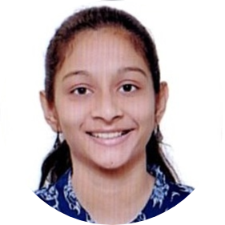

|  |
Rutuja DeshmukhINCLUSIVE LEADERComputer Engineering Student. I am a keen learner who is ambitious, reliable and an hardworking person with strong technical and management skills. I am also a versatile person who is decisive, influential, rational and proactive. I thrive to be an unbiased person who is always zealous for a Positive Shift. |
| Study Program | College / Institute | Year of Passing | Score | Class |
|---|---|---|---|---|
| Third Year Engineering(Currently Pursuing) | K. K. Wagh College of Engineering, Education and Research, Nashik | 2021(Expected) | - | - |
| Second Year Engineering | K. K. Wagh College of Engineering, Education and Research, Nashik | 2020 | 9.64 | Distinction |
| First Year Engineering | K. K. Wagh College of Engineering, Education and Research, Nashik | 2019 | 8.88 | Distinction |
| Higher Secondary School Certificate | GES's - RYK Science College | 2018 | 85.85 % | Distinction |
| Secondary School Certificate | Nirmala Convent High School | 2016 | 93 % | Distinction |
| Technical Skills | Rating | Soft Skills | Rating |
|---|---|---|---|
| C | ⭐⭐⭐⭐⭐ | Problem Solving | ⭐⭐⭐⭐⭐ |
| C++ | ⭐⭐⭐⭐⭐ | Critical Thinking | ⭐⭐⭐⭐⭐ |
| Data Structures and Algorithms | ⭐⭐⭐⭐ | Communication Skills | ⭐⭐⭐⭐⭐ |
| Object Oriented Concepts | ⭐⭐⭐⭐ | Presentation Skills | ⭐⭐⭐⭐⭐ |
| Web Development | ⭐⭐⭐ | Public Speaking | ⭐⭐⭐⭐ |
| Database Management Systems(Beginner) | ⭐⭐⭐ | Multi-tasking | ⭐⭐⭐⭐⭐ |
| MySQL(Beginner) | ⭐⭐ | Adaptability | ⭐⭐⭐⭐⭐ |
| Python(Beginner) | ⭐⭐ | ||
| Digital Marketing | ⭐⭐⭐⭐ | ||
| HTML | ⭐⭐⭐⭐⭐ | ||
| CSS | ⭐⭐ | ||
| Javascript | ⭐⭐⭐ |
| Year | Work |
|---|---|
| 2020-Present | Human Resources Co-Head at Rotaract Club of Nashik Youth Force |
| 2018-Present | Training and Placement Coordinator at KKWIEER of Computer Engineering Department |
| 2020-21 | Verzeo's Campus Ambassador Internship |
| 2019-20 | IIT Bombay's Techfest College Ambassador |
MSP is an event conducted by Indian Society for Technical Education (ISTE)
| English | ⭐⭐⭐⭐⭐ |
| Marathi | ⭐⭐⭐⭐ |
| Hindi | ⭐⭐⭐ |